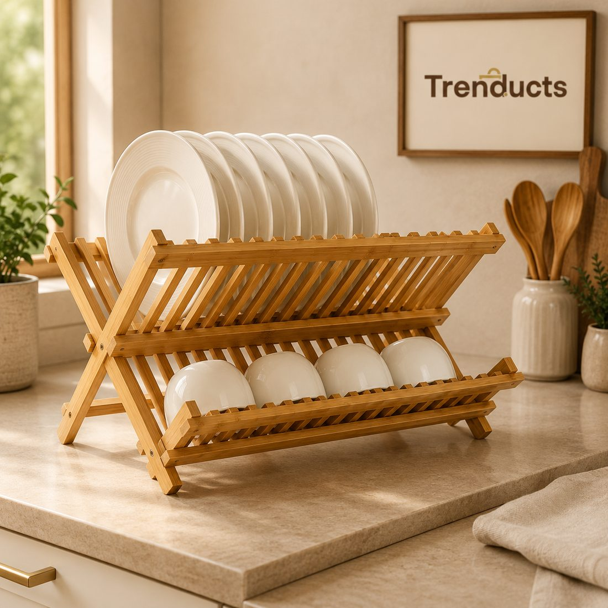
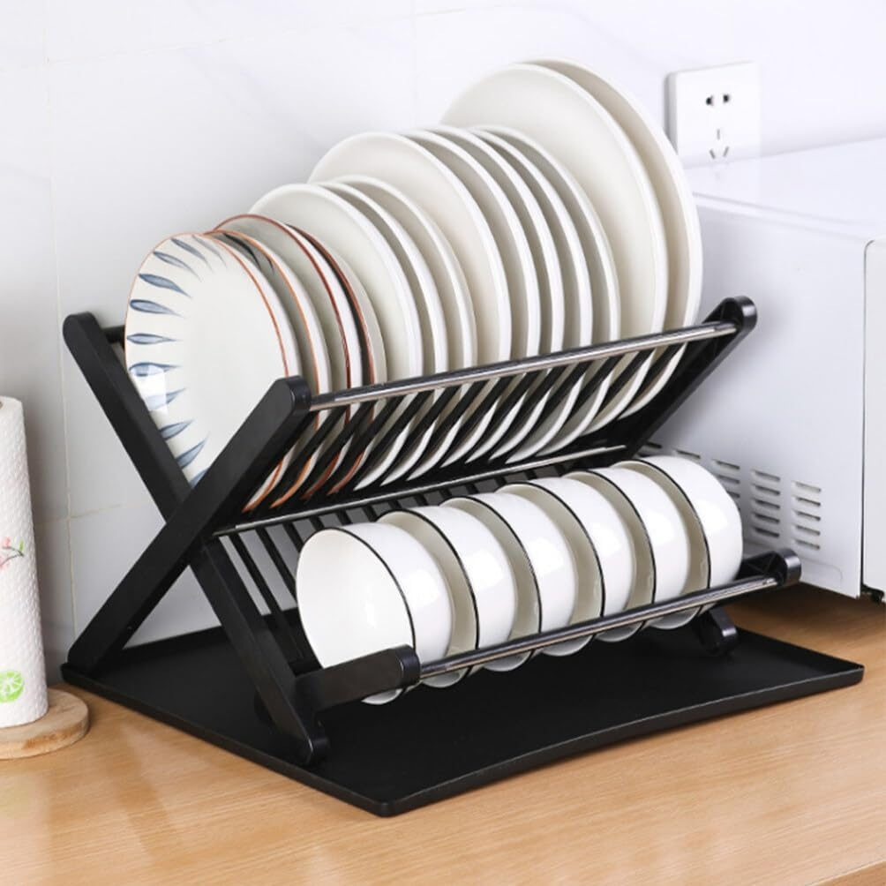

- Measure your space first
- Single or two-tier
- Material matters
- Drainage is the most important feature
- Fitting desi kitchenware
- Keeping the rack clean
- Hygiene habits
- Making the counter feel bigger
- When guests come
- Where to look
- A small upgrade that saves time daily
In a busy Pakistani home, the dishes never really stop. Breakfast parathas, lunch salan, evening chai and dinner mean a steady stream of plates, pots and cups through the day. In a small kitchen, wet dishes quickly take over every inch of counter space, and drying them with a cloth one by one takes time nobody has.
A good dish drying rack solves this. Choosing the right one depends on your space, how much you wash and what you wash.
Measure your space first
Look at where the rack will go. Most people put it beside the sink so water drains straight back into it. Measure the length and depth of the counter available and the height under any overhead cabinet. A rack that is too tall will not fit under cabinets, and one that is too deep will block the counter edge.
If your counter space is very limited, consider a rack that sits over the sink, or a foldable one that can be stored when not in use.
Single or two-tier
A single-level rack suits small families or those who dry and put away dishes quickly. A two-tier rack doubles the drying space without taking more counter width, holding plates on one level and cups, bowls or cutlery on another. For families of five or more, or homes that cook several dishes a day, two tiers make a real difference.

Material matters
- Stainless steel and coated metal racks are durable and handle heavy pots, but cheap coatings can rust over time where water collects.
- Plastic racks are light and inexpensive, but can stain and look worn.
- Bamboo racks look warm and natural and suit modern kitchens. They need to be allowed to dry fully and should be wiped occasionally to stay fresh.
Drainage is the most important feature
A rack without proper drainage leaves a pool of water on the counter or in the tray, which becomes smelly and slimy within days. Look for an integrated drip tray with a spout that can be angled toward the sink, so water runs away rather than collecting.
Fitting desi kitchenware
Pakistani kitchens have some specific items: deep karahis, large patilas, steel glasses and many small katoris. Check that a rack has wide enough slots for large plates and a space for bulky pots. A separate cutlery holder on the rack is essential; spoons scattered across a rack are a nuisance.

Keeping the rack clean
Dish racks can harbour mould and slime if ignored. Empty the drip tray daily. Once a week, wash the whole rack with hot soapy water and a brush. For stubborn build-up, a soak in water with a little vinegar helps. Let everything dry fully before reassembling.
Hygiene habits
- Rinse food off dishes before washing so the rack does not collect bits of rice and masala.
- Let dishes air dry instead of wiping with a damp cloth, which can spread germs.
- Put dry dishes away once a day so the rack does not become permanent storage.
Making the counter feel bigger
Once the rack is in place, keep the rest of the counter as clear as possible. Hang ladles on hooks, put spices on a small shelf and keep only daily items out. A tidy counter makes cooking easier and the kitchen look larger.
When guests come
After a dawat, the volume of dishes can overwhelm even a large rack. Wash in batches, starting with glasses and cutlery so they dry first and can be put away, then plates, then serving dishes and pots. Lay a clean, dry towel on the counter as overflow space for large serving dishes. Clearing as you go keeps the sink and rack usable through the evening.
Where to look
If you are replacing an old, rusting rack, the kitchen racks range at Trenducts includes drainage racks, foldable bamboo racks and two-tier designs with drip trays, delivered across Pakistan.
A small upgrade that saves time daily
A good dish rack is one of those purchases you notice every single day. It saves counter space, cuts drying time and keeps the kitchen cleaner, which is a good deal for something that simply sits beside the sink.